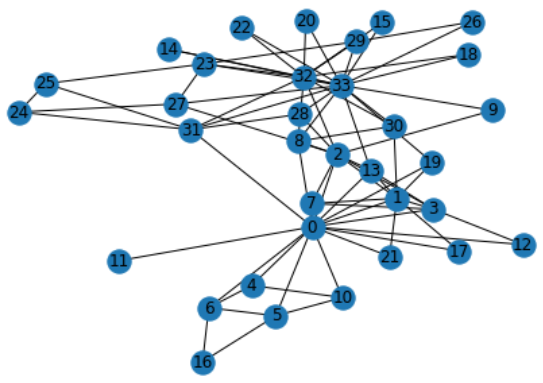
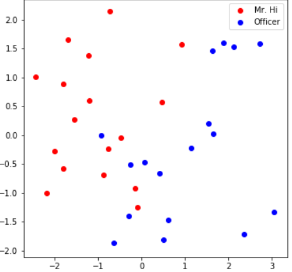

在这个colab中，我们会通过node embedding来对Karate Club Network的节点做一个分类。
本文主要参考资料为CS224W的Colab1。
Graph Basics
在这节课中依然要用到NetworkX，我们首先导入Karate Club Network
import networkx as nx
G = nx.karate_club_graph() # G is an undirected graph
nx.draw(G, with_labels = True)

Karate Club Network节点的平均的度
def average_degree(num_edges, num_nodes):
# TODO: Implement this function that takes number of edges
# and number of nodes, and returns the average node degree of
# the graph. Round the result to nearest integer (for example
# 3.3 will be rounded to 3 and 3.7 will be rounded to 4)
avg_degree = 0
############# Your code here ############
avg_degree += round((num_edges * 2) / num_nodes)
#########################################
return avg_degree
num_edges = G.number_of_edges()
num_nodes = G.number_of_nodes()
avg_degree = average_degree(num_edges, num_nodes)
print("Average degree of karate club network is {}".format(avg_degree))
Output: Average degree of karate club network is 5
Karate Club Network节点的平均聚类系数
定义节点并添加特征和label
def average_clustering_coefficient(G):
# TODO: Implement this function that takes a nx.Graph
# and returns the average clustering coefficient. Round
# the result to 2 decimal places (for example 3.333 will
# be rounded to 3.33 and 3.7571 will be rounded to 3.76)
avg_cluster_coef = 0
############# Your code here ############
## Note:
## 1: Please use the appropriate NetworkX clustering function
avg_cluster_coef += round(nx.average_clustering(G), 2)
#########################################
return avg_cluster_coef
avg_cluster_coef = average_clustering_coefficient(G)
print("Average clustering coefficient of karate club network is {}".format(avg_cluster_coef))
Output: Average clustering coefficient of karate club network is 0.57
节点0一轮迭代后的PageRank
PageRank的迭代式为$r_{j}=\sum_{i \rightarrow j} \beta \frac{r_{i}}{d_{i}}+(1-\beta) \frac{1}{N}$
def one_iter_pagerank(G, beta, r0, node_id):
# TODO: Implement this function that takes a nx.Graph, beta, r0 and node id.
# The return value r1 is one interation PageRank value for the input node.
# Please round r1 to 2 decimal places.
r1 = 0
############# Your code here ############
## Note:
## 1: You should not use nx.pagerank
temp = 0
for n in G.neighbors(node_id):
temp += 1 / G.degree(n)
r1 = round(beta * r0 * temp + (1 - beta) / G.number_of_nodes(), 2)
#########################################
return r1
beta = 0.8
r0 = 1 / G.number_of_nodes()
node = 0
r1 = one_iter_pagerank(G, beta, r0, node)
print("The PageRank value for node 0 after one iteration is {}".format(r1))
Output: The PageRank value for node 0 after one iteration is 0.13
节点5的邻近中心度(closeness centrality)
def closeness_centrality(G, node=5):
# TODO: Implement the function that calculates closeness centrality
# for a node in karate club network. G is the input karate club
# network and node is the node id in the graph. Please round the
# closeness centrality result to 2 decimal places.
closeness = 0
## Note:
## 1: You can use networkx closeness centrality function.
## 2: Notice that networkx closeness centrality returns the normalized
## closeness directly, which is different from the raw (unnormalized)
## one that we learned in the lecture.
closeness = round(nx.closeness_centrality(G,node) / (len(nx.node_connected_component(G, node)) - 1), 2)
#########################################
return closeness
node = 5
closeness = closeness_centrality(G, node=node)
print("The karate club network has closeness centrality {}".format(closeness))
Output: The karate club network has closeness centrality 0.01
用Tensor表示图
将Karate Club Network的边的列表用torch.LongTensor表示
import torch
def graph_to_edge_list(G):
# TODO: Implement the function that returns the edge list of
# an nx.Graph. The returned edge_list should be a list of tuples
# where each tuple is a tuple representing an edge connected
# by two nodes.
edge_list = []
############# Your code here ############
edge_list = [edge for edge in G.edges()]
#########################################
return edge_list
def edge_list_to_tensor(edge_list):
# TODO: Implement the function that transforms the edge_list to
# tensor. The input edge_list is a list of tuples and the resulting
# tensor should have the shape [2 x len(edge_list)].
edge_index = torch.tensor([])
############# Your code here ############
edge_index = torch.tensor(edge_list, dtype=torch.long).t()
#########################################
return edge_index
pos_edge_list = graph_to_edge_list(G)
pos_edge_index = edge_list_to_tensor(pos_edge_list)
print("The pos_edge_index tensor has shape {}".format(pos_edge_index.shape))
print("The pos_edge_index tensor has sum value {}".format(torch.sum(pos_edge_index)))
Output:
The pos_edge_index tensor has shape torch.Size([2, 78])
The pos_edge_index tensor has sum value 2535
实现负采样函数，讨论给出的五个边是否为负边（原图不存在的边）
import random
import numpy as np
def sample_negative_edges(G, num_neg_samples):
# TODO: Implement the function that returns a list of negative edges.
# The number of sampled negative edges is num_neg_samples. You do not
# need to consider the corner case when the number of possible negative edges
# is less than num_neg_samples. It should be ok as long as your implementation
# works on the karate club network. In this implementation, self loop should
# not be considered as either a positive or negative edge. Also, notice that
# the karate club network is an undirected graph, if (0, 1) is a positive
# edge, do you think (1, 0) can be a negative one?
neg_edge_list = []
############# Your code here ############
neg_edge_list = [random.sample(list(enumerate(nx.non_edges(G))), num_neg_samples)[i][1] for i in range(num_neg_samples)]
#########################################
return neg_edge_list
# Sample 78 negative edges
neg_edge_list = sample_negative_edges(G, len(pos_edge_list))
# Transform the negative edge list to tensor
neg_edge_index = edge_list_to_tensor(neg_edge_list)
print("The neg_edge_index tensor has shape {}".format(neg_edge_index.shape))
# Which of following edges can be negative ones?
edge_1 = (7, 1)
edge_2 = (1, 33)
edge_3 = (33, 22)
edge_4 = (0, 4)
edge_5 = (4, 2)
############# Your code here ############
## Note:
## 1: For each of the 5 edges, print whether it can be negative edge
print('edge_1'+(" can't" if G.has_edge(edge_1[0],edge_1[1]) else ' can')+' be negative edge')
print('edge_2'+(" can't" if G.has_edge(edge_2[0],edge_2[1]) else ' can')+' be negative edge')
print('edge_3'+(" can't" if G.has_edge(edge_3[0],edge_3[1]) else ' can')+' be negative edge')
print('edge_4'+(" can't" if G.has_edge(edge_4[0],edge_4[1]) else ' can')+' be negative edge')
print('edge_5'+(" can't" if G.has_edge(edge_5[0],edge_5[1]) else ' can')+' be negative edge')
#########################################
Output:
The neg_edge_index tensor has shape torch.Size([2, 78])
edge_1 can't be negative edge
edge_2 can be negative edge
edge_3 can't be negative edge
edge_4 can't be negative edge
edge_5 can be negative edge
Node Embedding Learning
首先调用需要的包，生成初始embedding
import torch
import torch.nn as nn
import matplotlib.pyplot as plt
from sklearn.decomposition import PCA
torch.manual_seed(1)
def create_node_emb(num_node=34, embedding_dim=16):
# TODO: Implement this function that will create the node embedding matrix.
# A torch.nn.Embedding layer will be returned. You do not need to change
# the values of num_node and embedding_dim. The weight matrix of returned
# layer should be initialized under uniform distribution.
emb = None
############# Your code here ############
emb = nn.Embedding(num_nodes, embedding_dim)
emb.weight.data = torch.rand(emb.weight.data.shape)
#########################################
return emb
emb = create_node_emb()
ids = torch.LongTensor([0, 3])
# Print the embedding layer
print("Embedding: {}".format(emb))
# An example that gets the embeddings for node 0 and 3
print(emb(ids))
Output:
Embedding: Embedding(34, 16)
tensor([[0.2114, 0.7335, 0.1433, 0.9647, 0.2933, 0.7951, 0.5170, 0.2801, 0.8339,
0.1185, 0.2355, 0.5599, 0.8966, 0.2858, 0.1955, 0.1808],
[0.7486, 0.6546, 0.3843, 0.9820, 0.6012, 0.3710, 0.4929, 0.9915, 0.8358,
0.4629, 0.9902, 0.7196, 0.2338, 0.0450, 0.7906, 0.9689]],
grad_fn=<EmbeddingBackward>)
利用PCA将16维的embedding降到两维并进行可视化
def visualize_emb(emb):
X = emb.weight.data.numpy()
pca = PCA(n_components=2)
components = pca.fit_transform(X)
plt.figure(figsize=(6, 6))
club1_x = []
club1_y = []
club2_x = []
club2_y = []
for node in G.nodes(data=True):
if node[1]['club'] == 'Mr. Hi':
club1_x.append(components[node[0]][0])
club1_y.append(components[node[0]][1])
else:
club2_x.append(components[node[0]][0])
club2_y.append(components[node[0]][1])
plt.scatter(club1_x, club1_y, color="red", label="Mr. Hi")
plt.scatter(club2_x, club2_y, color="blue", label="Officer")
plt.legend()
plt.show()
# Visualize the initial random embeddding
visualize_emb(emb)
可以看到随机初始化的embedding完全没有分开不同类的节点
接下来通过SGD学习embedding，这里的学习目标为相邻的节点的embedding的内积相近
from torch.optim import SGD
def accuracy(pred, label):
# TODO: Implement the accuracy function. This function takes the
# pred tensor (the resulting tensor after sigmoid) and the label
# tensor (torch.LongTensor). Predicted value greater than 0.5 will
# be classified as label 1. Else it will be classified as label 0.
# The returned accuracy should be rounded to 4 decimal places.
# For example, accuracy 0.82956 will be rounded to 0.8296.
accu = 0.0
############# Your code here ############
accu = sum(torch.round(pred) == label) / len(pred)
#########################################
return accu
def train(emb, loss_fn, sigmoid, train_label, train_edge):
# TODO: Train the embedding layer here. You can also change epochs and
# learning rate. In general, you need to implement:
# (1) Get the embeddings of the nodes in train_edge
# (2) Dot product the embeddings between each node pair
# (3) Feed the dot product result into sigmoid
# (4) Feed the sigmoid output into the loss_fn
# (5) Print both loss and accuracy of each epoch
# (as a sanity check, the loss should decrease during training)
epochs = 500
learning_rate = 0.1
optimizer = SGD(emb.parameters(), lr=learning_rate, momentum=0.9)
for i in range(epochs):
############# Your code here ############
optimizer.zero_grad()
pred = sigmoid(torch.sum(emb(train_edge)[0].mul(emb(train_edge)[1]),1))
loss = loss_fn(pred, train_label)
loss.backward() # Derive gradients.
optimizer.step() # Update parameters based on gradients.
print("Epoch {} Loss: {}, Accuracy: {}".format(i,loss,accuracy(pred, train_label)))
#########################################
loss_fn = nn.BCELoss()
sigmoid = nn.Sigmoid()
# Generate the positive and negative labels
pos_label = torch.ones(pos_edge_index.shape[1], )
neg_label = torch.zeros(neg_edge_index.shape[1], )
# Concat positive and negative labels into one tensor
train_label = torch.cat([pos_label, neg_label], dim=0)
# Concat positive and negative edges into one tensor
# Since the network is very small, we do not split the edges into val/test sets
train_edge = torch.cat([pos_edge_index, neg_edge_index], dim=1)
train(emb, loss_fn, sigmoid, train_label, train_edge)
visualize_emb(emb)

可以看到学习后的embedding基本能够区分不同类的节点。